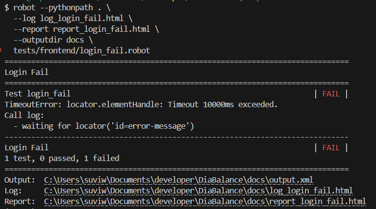
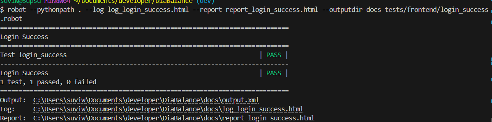

Yleiskatsaus
Tässä projektissa on toteutettu käyttöliittymän automaatiotestit Robot Frameworkin ja Browser-kirjaston avulla. Dokumentaatio sisältää ohjeet testien asentamiseen, käyttöönottoon ja suorittamiseen.
Testien käyttöönotto
Virtuaaliympäristön luonti ja aktivointi (Windows, esim. PowerShell tai Git Bash)
python -m venv .venv
source .venv/Scripts/activateRiippuvuuksien asennus
pip install -r testing/requirements.txtTestitiedostojen sijainnit
- Testit:
testing/tests/ - Resurssit:
testing/resources/ - Raportit ja julkaisu:
testing/results/
Testattavat käyttötapaukset
| Käyttötapaus | Tunnus |
|---|---|
| Rekisteröityminen | KI_3 |
| Epäonnistunut kirjautuminen | KI_1 |
| Onnistunut kirjautuminen | KI_1 |
| Uuden kalenterimerkinnän lisääminen | DI_1 |
| Kalenterimerkinnän muokkaus | DO_1 |
| Kalenterimerkinnän poistaminen | DI_2 |
| HRV-datan hakeminen Kubioksesta | KI_4 |
| Uloskirjautuminen | KI_2 |
| Chartin tarkastelu | DO_3 |
Testien suorituskomennot
Tulokset tallentuvat kansioon testing/results. Jokainen komento ajetaan erikseen, ja tulokset (log.html, report.html) nimetään käsin halutulla tavalla testin mukaan.
testing/results/latest
Frontend-testit
robot -d testing/results testing/tests/frontend/register_success.robot
robot -d testing/results testing/tests/frontend/login_fail.robot
robot -d testing/results testing/tests/frontend/login_success.robot
robot -d testing/results testing/tests/frontend/new_entry.robot
robot -d testing/results testing/tests/frontend/update_entry.robot
robot -d testing/results testing/tests/frontend/delete_entry.robot
robot -d testing/results testing/tests/frontend/get_HRV_data.robot
robot -d testing/results testing/tests/frontend/log_out.robotBackend-testit
robot -d testing/results testing/tests/backend/login_invalid.robot
robot -d testing/results testing/tests/backend/login_validation.robot
robot -d testing/results testing/tests/backend/login_success.robot
robot -d testing/results testing/tests/backend/calendar_entries.robot
robot -d testing/results testing/tests/backend/calendar_month_vs_aamu.robot
robot -d testing/results testing/tests/backend/update_entry.robot
robot -d testing/results testing/tests/backend/delete_entry.robotTestin ajon jälkeen
Tee testin ajon jälkeen:
- Nimeä
log.htmljareport.htmltestin mukaan (esim.log_login_success.html). - Siirrä ne oikeaan alikansioon projektin
results/-rakenteessa, esimerkiksiresults/latest/reportsjaresults/latest/logs.
Näin varmistat, että tulokset säilyvät ja ovat selkeästi eroteltavissa.
Testitulokset
Käyttäjätunnistautuminen frontend
Rekisteröityminen
Rekisteröityminen – raportti Rekisteröityminen – loki
Kirjautuminen epäonnistuu
Kirjautuminen FAIL – raportti Kirjautuminen FAIL – loki

Kirjautuminen onnistuu
Kirjautuminen SUCCESS – raportti Kirjautuminen SUCCESS – loki

Uloskirjautuminen
Uloskirjautuminen – raportti Uloskirjautuminen – loki
Kalenterimerkinnät frontend
Uuden merkinnän lisääminen
Uusi merkintä – raportti Uusi merkintä – loki
Merkinnän muokkaus
Muokattu merkintä – raportti Muokattu merkintä – loki
Merkinnän poistaminen
Poistettu merkintä – raportti Poistettu merkintä – loki
Terveystiedot HRV
HRV-datan haku Kubioksesta
HRV-datan haku – raportti HRV-datan haku – loki
Taustapalvelun testaaminen
API-virhekäsittelytesti
Testi tarkistaa, että /api/auth/login palauttaa 401 Unauthorized ja virheilmoituksen "Virheellinen käyttäjätunnus" väärillä tunnuksilla.
Virheellinen kirjautuminen - raportti Virheellinen kirjautuminen - loki
Validointitesti
Testataan sitä, mitä tapahtuu kun syötetään puutteellista tai virheellisesti muotoiltua dataa, esimerkiksi puuttuva salasana tai liian lyhyt käyttäjänimi.
Validonti: puuttuva salasanaa Validointi: puuttuva salasana
Onnistunut kirjautuminen – backend API
Kirjautuminen onnistuu – raportti Kirjautuminen onnistuu – loki
Kahden merkinnän lisääminen
Kahden merkinnän lisäys - raportti Kahden merkinnän lisäys - loki
Toukokuun vs_aamu arvojen hakeminen
Toukokuun vs_aamu arvot - raportti Toukokuun vs_aamu arvot - loki

Aiemman merkinnän muokkaaminen
Muokattu merkintä - raportti Muokattu merkintä - loki
Aiemman merkinnän poistaminen
Merkinnän poistaminen - raportti Merkinnän poistaminen - loki
Testien suorittaminen yhdellä komennolla
Kaikkien testien ajaminen yhdellä komennolla ei ole tässä projektissa mahdollista ilman lisävalmistelua. Tähän vaikuttavat seuraavat syyt:
| Testi | Miksi ongelmallinen? |
|---|---|
| Rekisteröityminen | Samalla käyttäjätunnuksella voi rekisteröityä vain kerran → jos sama tunnus, toinen ajo FAIL. |
| Uuden kalenterimerkinnän lisääminen | Sama päivämäärä + käyttäjä voi saada Duplicate Key -virheen → FAIL. |
| Merkinnän muokkaaminen | Ok, toimii, jos merkintä on olemassa. |
| Merkinnän poistaminen | Poiston jälkeen sama testi ei enää löydä merkintää → FAIL. |
Yhteenveto:
Monet testit ovat tilariippuvaisia (eli riippuvat siitä mitä tietokannassa jo on), jolloin "ajettavuus yhdellä komennolla" ei ole mahdollista ilman isompaa valmistelua (esim. automaattinen tietokannan resetointi ennen ajoa).
Testit on rakennettu ajettaviksi yksittäin tai oikeassa järjestyksessä, mikä on tässä projektissa käytännönläheinen ratkaisu.
Kaikki testit voi periaatteessa ajaa komennolla:
robot --pythonpath . testsTai raportit docs/-kansioon:
robot --pythonpath . --outputdir docs testsMutta osa testeistä tosiaan epäonnistuisi, joten emme aio käyttää näitä komentoja testeissämme.
Huomioita
- HTML-raportit ja lokit ylikirjoitetaan jokaisen ajon yhteydessä.
- Jos haluaa säilyttää kaikki aiemmat testitulokset, kannattaa käyttää uniikkeja tiedostonimiä tai alikansioita.